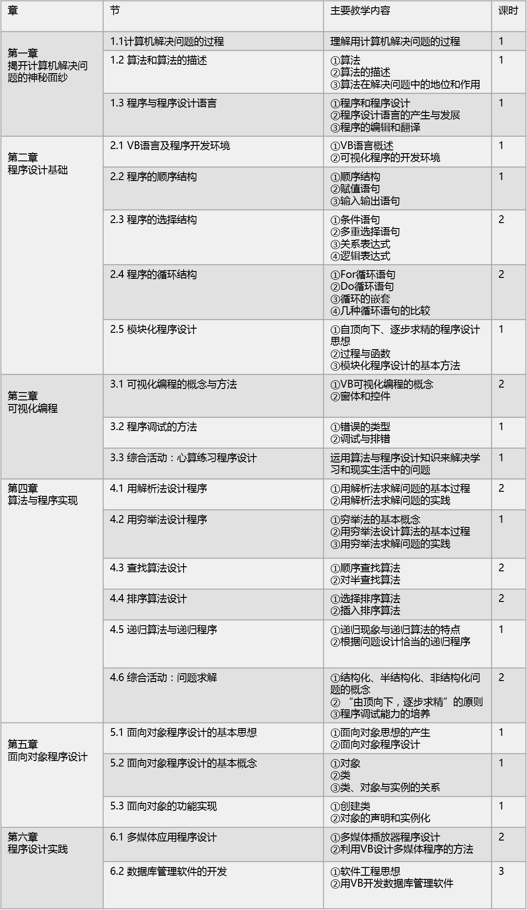

《算法与程序设计》教材分析
一、课程定位
1.1 选修部分强调在必修模块的基础上关注技术能力与人文素养的双重建构，是信息素养培养的继续，是支持个性发展的平台。
1.2 模块内容设计既注重技术深度和广度的把握，适度反映前沿进展，又关注技术文化与信息文化理念的表达。
1.3 在选修部分的五个模块中“算法与程序设计”是作为计算机应用的技术基础设置的。
二、目标与内容分析
2.1 课程目标
2.1.1 使学生在原有基础上进一步体验算法思想，了解算法和程序设计在解决问题过程中的地位和作用
2.1.2 能从简单问题出发，设计解决问题的算法，并能初步使用一种程序设计语言编写程序实现算法解决问题。
2.2 内容分析
本模块共六章，其中第一章“揭开计算机解决问题的神秘面纱”，是全书的开篇，起一个引进门的作用，同时也起到承接必修模块的作用，任务是让学生了解课程的全貌，并且让学生掌握一些重要的程序设计的理念。第二章“程序设计基础”，是本模块基础且关键的部分，将从一些生动有趣的问题出发，沿着分析问题、设计算法、编写程序等运用计算机解决问题之路，开始学习如何使用VB程序设计语言编写程序解决问题，掌握VB的基本语句、程序的基本控制结构以及程序设计的基本思想与方法。第三章“可视化编程”， 是本模块基础且关键的部分，将结合一些应用的实例，引导学生经历VB的可视化编程，让学生从解决问题的过程中，掌握VB可视化编程的概念和方法，学会程序调试和查错，并能综合运用所学的知识设计一个心算练习程序。第四章“算法与程序实现”，学生将学习一些基本的算法（解析法、穷举法、排序、查找和递归等），并且通过了解用这些算法解决问题的一些案例，掌握编写程序的一些技巧，为进一步学习打下良好的基础。第五章“面向对象程序设计”，在前面学生学会运用模块化程序设计的思想与方法解决简单问题的基础上，将结合实例，引导学生经历面向对象程序设计，让学生从解决问题中掌握面向对象程序设计的基本思想和方法，初步学会利用VB面向对象程序设计方法编写程序。第六章“程序设计实践”，是本教材的巩固与提高部分，将结合两个应用的案例，综合运用前面所学的算法与程序设计的知识来解决实际问题，进一步领悟程序设计方法和软件开发过程，引导学生熟悉使用编程语言和工具解决综合性问题，进一步提高程序设计和软件开发能力。
三、实施的建议与要求
3.1 实施建议
3.1.1计算机解决问题的基本过程
a.结合实例，经历分析问题、确定算法、编程求解等用计算机解决问题的基本过程，认识算法和程序设计在其中的地位和作用。
b.经历用自然语言、流程图或伪代码等方法描述算法的过程。
教学活动建议
a. 通过例举生活与学习中需要用计算机解决的问题，如有关数值计算、逻辑等方法的问题，让学生认识问题，形成问题意识，感受利用计算机解决问题的必要性。
b. 通过实验活动，帮助学生感知算法在用计算机解决问题过程中的地位和作用。
c. 通过一个具体的实例，从提出问题入手，引导学生在将以往所学的数学解题过程迁移过来，设计算法并使用自然语言、流程图等描述算法，使用VB语言实现算法，从而经历用计算机解决问题的基本过程。
d. 尽管本章从学生学习和生活的实例出发，列举了一些典型的、常见的例子，但算法仍是学生较难理解和掌握的内容。本章只是开始，要求不能过高，随着学习的深入，积累的算法的增多，学生的理解 会逐步加深。对此，教师应注意循序渐进，不能要求学生一蹴而就。
3.1.2 程序设计语言初步
理解并掌握一种程序设计语言的基本知识，包括语句、数据类型、变量、常量、表达式、函数。会使用程序设计语言实现顺序、选择、循环三种控制结构。
教学活动建议
a. 选择实例，根据解决问题的要求分析设计算法，恰当地使用三种控制结构编写源程序，调试并运行该程序，在过程中体验程序设计语言的逻辑特点。
b. 分别就模块化程序设计的思想与方法、面向对象的程序设计语言的思想与方法展开讨论，展望计算机程序设计的发展趋势。
c. 注重让学生在实践中掌握解程序设计语言程序的使用。
3.1.3 算法与问题解决例举
查找、排序与问题解决：了解数组的概念，掌握使用数组存储批量数据的基本方法。
教学活动建议
从其他科目的学习或者生活实际中选择问题，确定解决该问题所需要的算法和计算公式，用流程图描述问题的计算过程，编写程序，调试并运行该程序，获得问题的答案，并讨论该问题解决过程与所得答案的特点。
3.2 实施要求
计算机网络实验室（配备Windows 98/2000以上的计算机），具备校园网，能够接入Internet或安装虚拟Internet系统。
四、教学策略与评价
4.1 教学策略
4.1.1教学方法多样化——讲授法、练习法、任务驱动法、示范模拟法、自主学习法等
a.讲授法——教师通过简明、生动的口头语言向学生传授知识、发展学生智力的方法。
b.练习法——学生在教师的指导下巩固知识、运用知识、形成技能技巧的方法。
c.任务驱动法——教师给学生布置探究性的学习任务，学生查阅资料，对知识体系进行整理，再选出代表进行讲解，最后由教师进行总结。
d.示范模拟法——以教学示范和学生模仿的方式来促进学生有效地获得某种技能的方法，适用于动作技能领域的学习。
e.自主学习法——以学习者为中心的教学方法。
4.1.2教学组织形式多样化——个别化学习、小组合作学习等
a.个别化学习——学习主要是一种内部操作，由学生来完成；学生按照自己的进度学习，积极主动完成课题并体验到成功的快乐。
b.小组合作学习——通过讨论、问答、交流、完成任务等在师生之间、学生之间分享教学信息和经验来实现的。
4.1.3教学活动程序多样化——传递—接受程序、概念获得程序
a.传递—接受程序——主要适用于认知领域的教育目标，它的基本过程是：激发学习动机复习旧课讲授新课巩固运用检查。可以使学生比较迅速有效地掌握较多的知识。
b.概念获得程序——一种典型的归纳式的教学思路，基本过程是呈示资料和确认属性验证获得的概念分析思维策略。
4.1.4学习资源丰富——网站、光盘、课件
a.在教学网站上，我们的拓展资源提供了参考网站，拓展学习内容，提供更多的学习资源。另外本模块提供了配套光盘，供学生学习。教学过程中所用到的素材、资料、工具软件均存放在各章的文件夹中。广东省信息技术教研网作为全套教材的配套网站，将及时为学生和老师提供最新的学与教的案例、课件等资源。
4.2 教学评价
a.过程性评价：本模块在学习过程中设置有任务题、讨论题等小活动，学生通过这些小活动可以评价自身是否掌握了阶段性的知识点。
b.总结性评价：本模块每章节后面配有“本章扼要回顾”和“本章学习评价”，可供学生进行自我评价。同时，教材各章的后面配置具有一定巩固和评价功能的练习题，学习者通过测试可以得到及时的反馈，并总结自己的学习情况。
c.自评：本模块注重学生在学习中的主题地位，通过在任务探究中引导学生反思、总结，以及通过巩固测试等方式，让学生进行自我评价，从而提高他们的自我反思能力，使其对自身的学习情况更加了解，及时对学习方式等作出调整。
d.互评：在任务完成之后，学生需要对操作中运用到的知识进行交流与点评，形成学生之间的互相评价，同学学习的差距不会太大。
e.评价内容的多元性：本课题资源的设置和媒体的选用以及教学方式，能够检验学习者对氧气性质、制取氧气的方法和原理、实验器材以及实验操作注意事项的掌握程度，评价的内容多元、全面。
下面是一个过程性评价量表，供参考。

五、教学计划
